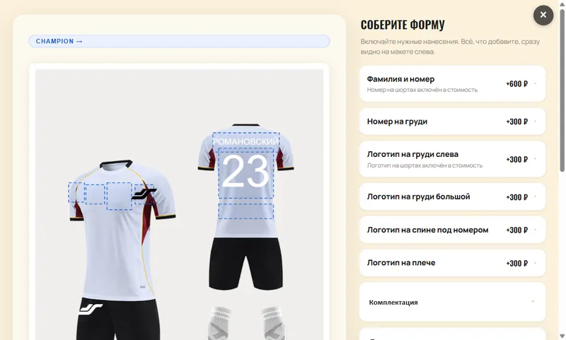

Производитель спортивной формы принимал заказы перепиской: клиент описывал цвет, модель и нанесения словами, менеджер вручную пересчитывал цену и рисовал макет. Теперь на сайте три конструктора — форма, футболки и постеры на металле, — а заказ приходит уже с макетом и посчитанной ценой.
Клиент
Jetron, магазин спортивной формы
Год
2026
Роль
проектирование, фронтенд, WordPress и WooCommerce, расчёт цены на сервере
Стек
Vanilla JS, Fabric.js, PHP 8.3, WooCommerce
Задача
Заказ формы — это десятки решений: линейка, расцветка, размеры, номер, фамилия, логотипы на груди, спине и плече. В переписке всё это терялось, а каждая правка стоила менеджеру пересчёта цены и нового макета.
Нужно было, чтобы покупатель собирал изделие сам, сразу видел результат и честную цену, а заказ приходил в магазин в готовом для печати виде — и всё это внутри существующего сайта на WordPress, не ломая его.
Как это работает
Конструктор формы: модель, расцветка, фамилия и номерКонструктор футболок: принты из библиотеки и цвета
Три конструктора на одном сайте

01
Конструктор формы
8 линеек и 45 расцветок, детские и взрослые размеры
Номер, фамилия и свой логотип в зонах на макете; номер и фамилия — разными шрифтами
Цвета надписей заказчик меняет в админке сам, без программиста